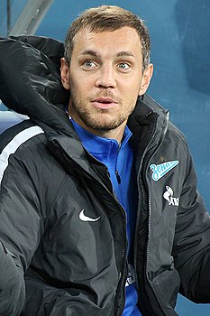

Dzuba
who is it?
He was born on August 22, 1988 in Moscow. His Ukrainian father, from the city of Lubny, Poltava region, worked as a policeman; a mother from Tsivilsk, Chuvashia, worked in a store. [1]
A pupil of the football school of the club "Spartak" (Moscow). He began his adult football career in 2006 in the main team of the same club, where he spent three seasons, taking part in 47 championship matches.
During 2009-2010 he played on loan for the club "Tom".
After returning from the lease, he joined Spartak in 2011. This time he played for the Moscow Spartak players for the next two seasons of his playing career. Most of the time spent as part of the Moscow "Spartak" was the main player of the attacking team
Dzuba its professional footballer
- also Ronaldo
- also Messi
- and Zidan
My favorite footballer

its Dzuba
he play with his hands